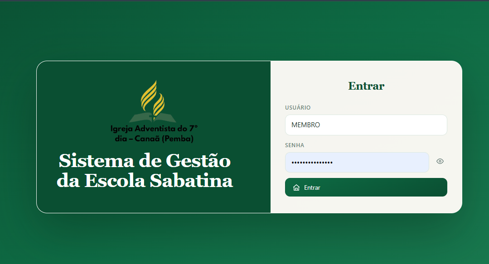

Sistema de gestãoGestão da Escola Sabatina
Sistema para apoiar a gestão da Escola Sabatina da Igreja Adventista do 7º dia, em Canaã (Pemba). A imagem apresenta o ecrã de entrada da aplicação.

Suporte Técnico • Redes • Programação Web
Estudante de Tecnologia da Informação, focado em redes de computadores, suporte técnico e desenvolvimento web. Transformo conhecimentos em projetos práticos e soluções tecnológicas.
Sobre Mim
Sou Rafique Eusebio Norapelana, estudante de Tecnologia da Informação, com conhecimentos em suporte técnico, redes de computadores e desenvolvimento web. Desenvolvo projetos práticos para aplicar os meus conhecimentos, resolver problemas tecnológicos e aperfeiçoar as minhas competências. Procuro oportunidades para contribuir com soluções úteis, aprender continuamente e crescer profissionalmente na área da tecnologia.
Projetos
Projetos desenvolvidos com foco em aplicacao pratica de conhecimentos, organizacao tecnica e apresentacao clara de resultados.

Sistema de gestãoSistema para apoiar a gestão da Escola Sabatina da Igreja Adventista do 7º dia, em Canaã (Pemba). A imagem apresenta o ecrã de entrada da aplicação.
Site de apresentação dos serviços RafaCyber, incluindo assistência informática, redes de computadores, desenvolvimento web e design gráfico.
 Ciberseguranca web
Ciberseguranca web
Projeto web voltado para a area de ciberseguranca, desenvolvido para apresentar conteudos, servicos e uma identidade visual alinhada ao universo da seguranca digital.
 Software
Software
Software desenvolvido com foco em criptografia, aplicando conceitos de programacao em Java, protecao de dados e estruturacao de funcionalidades tecnicas de forma organizada.
 Loja online
Loja online
Site de loja criado para apresentar produtos de forma clara e atrativa, com foco numa navegacao intuitiva, boa organizacao visual e uma experiencia moderna para o utilizador.
Competências técnicas
Conhecimentos e ferramentas que utilizo para desenvolver projetos e resolver problemas tecnológicos.
Manutenção de computadores, instalação de software e diagnóstico de problemas informáticos.
Fundamentos de redes, endereçamento IP, configuração e resolução de problemas de conectividade.
Criação de páginas web e desenvolvimento de aplicações através de projetos práticos.
Fundamentos de segurança digital, proteção de dados, criptografia e boas práticas de segurança.
Entre em contacto
Tens uma oportunidade profissional, um projeto ou uma proposta de colaboração? Estou disponível para conversar.